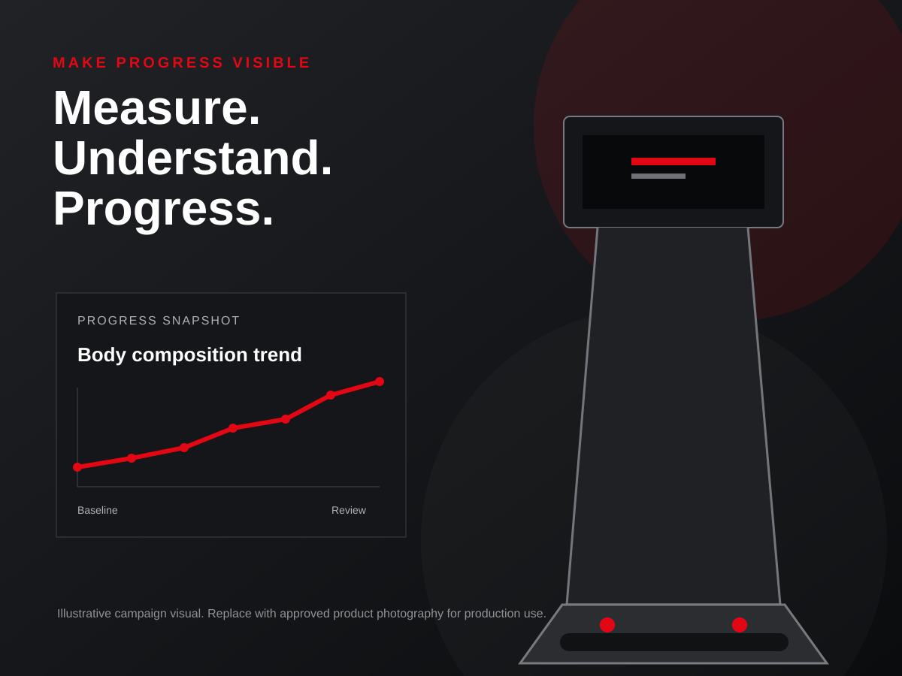

seca TRU Alpha campaign concept
Progress You Can Prove
A working proof of a B2B campaign strategy connecting measurable member progress to operator economics, HubSpot journeys and pilot-led commercial validation.

seca TRU Alpha campaign concept
A working proof of a B2B campaign strategy connecting measurable member progress to operator economics, HubSpot journeys and pilot-led commercial validation.
